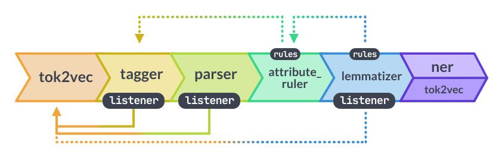

viewof graense = sds1.skyder({ label: "Ordet skal stå i mindst", min: 1, max: 50, value: 5, enhed: "opslag", vent: 350 })Ingen R-kode i dag: værktøjerne har mig bekendt ikke et meningsfuldt alternativ i R, der kan køre i browseren. Alt kan dog også gøres i R lokalt.
I sidste uge hentede I data ned fra nettet. I dag arbejder vi med resultatet af sådan en scraping.
job.aka.dk, jobbank.dk, Djof_Jobunivers og akademikerjob.dk.Målet i dag er ikke at analysere opslagene. Målet er at nå frem til en datastruktur, man kan analysere.
Næste gang analyserer vi med PCA og k-means.
Rå scrapede data kan sjældent bare læses ind. Først skal rodet forstås.
ParserError: Error tokenizing data.
C error: Expected 1 fields in line 3, saw 3Tre ting er galt med filen, og read_csv fortæller kun om én ad gangen.
1 · Separator
Dansk Excel bruger ;, ikke ,.
2 · Overskrift
Første linje er Column1;Column2;.... Den rigtige overskrift står på linje to. (Og linje 7174 indeholder en fejl.)
3 · Tegnsæt
Filen er ikke UTF-8. København står som K?benhavn.
En tekstfil er bytes. Tegnsættet er aftalen om, hvilket tegn hver byte betyder. Den samme byte, 0xBF, læst med tre aftaler:
Mac Roman
ø
Latin-1
¿
UTF-8
ugyldig
Filen fortæller ikke selv, hvilken aftale der gælder. Man gætter, indtil teksten ser rigtig ud.
Får I
øeller?i stedet forø, er det næsten aldrig et problem med data. Det er et problem med, hvordan de bliver læst.
Cirka 10 % af materialet, så det kan køre i browseren. Cellen kører af sig selv.
Hvad gør koden? Den indlæser et udsnit af jobopslagene (cirka 1.000) og tæller, hvor mange der kommer fra hver jobportal. Cellen kører af sig selv.
opslag = pd.read_csv(url) læser udsnittet. Det er allerede gemt som almindelig CSV, så standardindstillingerne virker.
opslag.shape viser antal rækker og kolonner.
opslag["source"].value_counts() tæller, hvor mange gange hver værdi står i kolonnen source, sorteret med den hyppigste først.
Hvad gør koden? Den viser kolonnernes navne og tæller manglende værdier i hver kolonne.
opslag.columns.tolist() giver kolonnenavnene som en almindelig Python-liste.
print() uden noget i giver en tom linje, så outputtet bliver lettere at læse.
opslag.isna() laver en tabel af samme størrelse, hvor hver celle er True, hvis værdien mangler.
.sum() lægger hver kolonne sammen. True tæller som 1, så tallet er antallet af manglende værdier.
Tip: Vil I se de manglende værdier per jobportal, skriv opslag.isna().groupby(opslag["source"]).sum(). Giv groupby() selve kolonnen, ikke navnet: efter .isna() er source også blevet til True/False.
company mangler for langt de fleste opslag. Men ikke tilfældigt: den findes for alle opslag fra jobbank.dk og for ingen fra de tre andre.
Hvad gør koden? Den finder det første opslag, hvor feltet various_meta1 er udfyldt, og viser feltets indhold.
opslag["various_meta1"].notna() giver True for hver række, hvor feltet ikke er tomt.
opslag[...] beholder kun de rækker.
.index giver rækkenumrene på dem, der er tilbage, og [0] tager det første. Det gemmes som raekke.
opslag.loc[raekke, "various_meta1"] slår op med rækkenummer og kolonnenavn og giver én celle.
Oversat: find den første række, hvor feltet ikke er tomt, og vis, hvad der står i det.
Det ligger i various_meta1 sammen med sted og dato, adskilt af linjeskift. Feltet er ikke data. Det er tekst, der indeholder data.
Hvad gør koden? Den deler feltet op i linjer og viser hver linje med et nummer foran.
.loc[raekke, "various_meta1"] henter den samme celle som før.
.split("\n") er en almindelig tekst-metode. Den deler teksten ved hvert linjeskift (\n) og giver en liste med én tekst per linje.
for i, l in enumerate(linjer): løber gennem listen. enumerate giver både nummeret (i) og selve teksten (l).
print(i, "|", l) skriver nummer og tekst med en lodret streg imellem.
.str gør det samme for alle rækker på én gang.
Hvad gør koden? Den gør det samme for alle opslag på én gang og tæller, hvor mange linjer felterne har.
har_meta = opslag["various_meta1"].notna() er True for rækker, hvor feltet er udfyldt.
opslag.loc[har_meta, "various_meta1"] vælger de rækker og kun den kolonne.
.str.split("\n") deler hver tekst ved linjeskift. .str betyder: brug tekst-metoden på hver celle i kolonnen. Resultatet er en kolonne, hvor hver celle er en liste.
dele.str.len() tæller elementerne i hver liste, og .value_counts() tæller, hvor ofte hver længde forekommer.
De fleste felter har tre linjer: firma, sted, indrykningsdato. Men ikke alle. Nogle har to.
Fire scrapere har lagt data i felterne på fire måder.
Er det bedst at rette i data (fx i Excel) eller at skrive kode, der kan håndtere alle fire varianter?
Hvert valg om, hvad der tæller som “det samme ord”, ændrer data.
Hvert unikt ord er en dimension: én kolonne i en tabel med ét dokument pr. række.
Hvad gør koden? Den deler alle opslagstekster op i ord og tæller tokens og typer.
opslag["job_description"].astype(str) vælger teksterne og sikrer, at alt behandles som tekst.
.str.split() deler hver tekst ved mellemrum til en liste af ord.
.explode() giver hvert ord sin egen række. Indekset (rækkenummeret) følger med, så vi stadig ved, hvilket opslag ordet kom fra.
len(ord) er antallet af tokens (alle forekomster). ord.nunique() er antallet af typer (unikke ord).
Eksempel: "Vi søger en forsker" i opslag 0 bliver til fire rækker, Vi, søger, en, forsker, alle med indeks 0.
Tokens er forekomster. Står job 400 gange, er det 400 tokens.
Typer er unikke ord. job er én type.
Nogle trin fjerner mange tokens, andre mange typer. Følg de to tal, mens sætningen renses.
Denny & Spirling (2017) opstiller syv, som næsten alle bruger. Ingen af dem er neutrale.
| Operation | Hvad det koster | |
|---|---|---|
| P | Fjern tegnsætning | Hashtags og forkortelser går tabt |
| N | Fjern tal | “§ 17” og “2024” kan være indhold |
| L | Små bogstaver | Rose (navn) og rose (blomst) smelter sammen |
| S | Stemming | universitet og universel kan ende samme sted |
| W | Fjern stopord | Der findes ingen facitliste |
| 3 | n-grams | social rådgiver er ikke socialrådgiver |
| I | Fjern sjældne ord | Det sjældne kan være det interessante |
Hvad gør koden? Den laver alle ord om til små bogstaver.
ord.str.lower() giver en ny kolonne med små bogstaver, som gemmes under det gamle navn.
Vi og vi nu er det samme ord.
Ingen tokens forsvinder, men mange typer gør. Vi og vi var to forskellige ord.
Hvad gør koden? Den fjerner tegnsætning i begyndelsen og slutningen af hvert ord.
import string henter Pythons indbyggede modul string. Det skal ikke installeres.
string.punctuation er en tekst med de almindelige tegn: !"#$%&'()*+,-./:;<=>?@[\]^_{|}~. Vi lægger nogle danske tegn til med +.
ord.str.strip(tegn) fjerner alle de tegn fra enderne af hvert ord: "forsker," bliver til "forsker". En bindestreg midt i, som i data-driven, bliver stående.
ord[ord != ""] fjerner ord, der var ren tegnsætning og nu er blevet tomme.
Det største enkeltproblem i hele kæden: job., job, og job var tre ord. Bemærk, at .strip() kun fjerner i enderne.
Hvad gør koden? Den fjerner alle ord, der indeholder mindst ét ciffer.
ord.str.contains(r"\d") er True for hvert ord med et ciffer. \d er et regulært udtryk for ét ciffer 0–9. r foran anførselstegnet gør, at \ bliver læst bogstaveligt.
~ betyder ikke og vender True/False om.
ord[...] beholder kun ordene uden cifre: "2026" og "python3" forsvinder, "Python" bliver.
Vil I kun fjerne rene tal, brug ord[~ord.str.fullmatch(r"\d+")].
I jobopslag er tal lønninger, frister, timetal og paragraffer. Støj eller indhold? Det afhænger af spørgsmålet.
Hvad gør koden? Den fjerner danske stopord.
"""...""" er en tekst, der må fylde flere linjer.
.split() deler den ved mellemrum og linjeskift til en liste af ord.
set(...) gør listen til en mængde: hvert ord står der kun én gang, og det går meget hurtigt at slå op i den.
ord.isin(stopord) er True for hvert ord, der står på listen. ~ vender det om, så vi beholder de ord, der ikke er stopord.
Nu sker det modsatte: en tredjedel af alle tokens forsvinder, men vokabularet falder kun med antallet af ord på listen.
Hvad gør koden? Den beholder kun ord, der står i mindst 5 forskellige opslag.
ord.rename("ord") giver kolonnen et navn, ord.
.reset_index() laver rækkenumrene om til en almindelig kolonne, index. Nu har vi en tabel med to kolonner: hvilket opslag og hvilket ord.
.drop_duplicates() fjerner gentagelser: står et ord ti gange i samme opslag, tæller det kun én gang.
par["ord"].value_counts() tæller, i hvor mange opslag hvert ord står. Det kaldes dokumentfrekvens.
dok_frekvens[dok_frekvens >= 5].index giver selve ordene, der står i mindst 5 opslag. .index er nødvendig, fordi vi vil have ordene, ikke tallene.
ord[ord.isin(hyppige)] beholder kun de ord.
Nu falder vokabularet dramatisk, mens næsten alle tokens bliver.
viewof graense = sds1.skyder({ label: "Ordet skal stå i mindst", min: 1, max: 50, value: 5, enhed: "opslag", vent: 350 })drop_duplicates() sørger for, at et ord kun tæller én gang pr. opslag.
graense opslag. Tallet kommer fra skyderen.
Det fulde materiale på 7.207 opslag. 86 % af vokabularet er væk, 62 % af tokens er tilbage. Det er dimensionalitetsreduktion.
Stopord
Fjerner 1,5 millioner tokens og 78 typer. Teksten bliver kortere. Tabellen bliver ikke smallere.
Sjældne ord
Fjerner 72.000 typer og kun 3 % af tokens. Tabellen bliver meget smallere. Teksten bliver næsten ikke kortere.
43.082 ord optræder i præcis ét dokument. De fylder en fjerdedel af tabellen og kan pr. definition ikke bruges til at sammenligne dokumenter.
Syv operationer, der hver kan slås til eller fra, giver 2⁷ = 128 forskellige datasæt af det samme materiale. Fire af dem, prøvet på 2.000 opslag:
| L | P | N | S | Unikke ord |
|---|---|---|---|---|
| til | til | til | til | 45.638 |
| til | fra | fra | fra | 71.241 |
| fra | fra | fra | fra | 78.544 |
Samme tekster. Vokabularet varierer med en faktor to.
Klassifikation
Man kan måle sig frem: prøv kombinationerne, og vælg den med den bedste accuracy. Der findes et facit.
Klyngeanalyse og topic models
Der findes ikke noget facit. Ingen kan endegyldigt sige, om fire klynger er rigtigere end fem.
Rådene om preprocessing kommer mest fra klassifikationslitteraturen og overføres ukritisk til det usuperviserede. Det er Denny & Spirlings hovedanke.
Jeres valg kan ændre konklusionen, uden at nogen kan opdage det.
preText kører kombinationerne og måler, hvor meget de flytter resultatet.Fra ét ord pr. række til én række pr. dokument.
Efter tokenisering er teksten tidy: én række pr. ord i et dokument. Det er let at tælle, filtrere og koble med andre data.
Men mange modeller kræver, at hvert dokument er én observation. Derfor tæller vi op til en document-term matrix (DTM).
Det er en pivotering fra langt til bredt format (lektion 3): rækker = dokumenter, kolonner = ord, værdier = antal. Ord bliver til variable.
Én række pr. dokument. Én kolonne pr. ord. Hver celle er en optælling.
| ansøgning | erfaring | team | udvikling | |
|---|---|---|---|---|
| Tekst 1 | 2 | 5 | 0 | 3 |
| Tekst 2 | 1 | 0 | 4 | 0 |
| Tekst 3 | 0 | 3 | 2 | 1 |
Hver række er et punkt i et rum med lige så mange dimensioner, som der er ord. Det er den struktur, PCA, k-means, regression, klassifikation og topic models skal bruge.
Hvad gør koden? Den bygger en document-term matrix (DTM) og måler, hvor stor en del af den der er nuller.
pd.crosstab(ord.index, ord) laver en krydstabel: én række per opslag (ord.index), én kolonne per ord, og i hver celle antallet af gange, ordet står i opslaget.
dtm.shape viser (antal opslag, antal ord).
(dtm != 0) giver True for hver celle, der ikke er 0. .to_numpy() laver tabellen om til et rent talgitter (et NumPy-array), og .sum() tæller alle True i hele gitteret.
(dtm == 0).to_numpy().mean() er andelen af nuller. Gange 100 giver procent, og round(..., 2) afrunder.
Langt over 90 % af tabellen er nuller. Det er ikke en fejl. Sådan er sprog: intet dokument bruger mere end en brøkdel af vokabularet.
Derfor har vi brug for dimensionalitetsreduktion. Det er næste lektion.
Når teksten er blevet til tællinger, kan man begynde at spørge.
Frekvenslister
Hvad fylder mest, og fylder det mere end forventet?
Kollokation
Hvilke ord optræder sammen oftere, end tilfældet ville give?
Nøgleord
Hvilke ord er karakteristiske for ét delkorpus sammenlignet med et andet?
Konkordans
Gå tilbage til teksten, og se ordet i sin kontekst.
Klassiske korpuslingvistiske greb (Hunston).
Hvad gør koden? Den viser de 15 hyppigste ord efter al oprydningen. value_counts() tæller hvert ord, og .head(15) viser de første 15.
De hyppigste ord er and, the, of, to, in. Korpusset er ikke kun på dansk.
Hvad gør koden? Den finder opslag, der sandsynligvis er skrevet på engelsk.
tekster.str.lower() laver teksterne om til små bogstaver.
.str.count(r"\bthe\b") tæller, hvor mange gange ordet the står i hver tekst. \b betyder ordgrænse, så the inde i theory ikke tæller med.
>= 10 er True for tekster med mindst ti forekomster. Vi bruger det som et simpelt tegn på engelsk.
paa_engelsk.sum() tæller dem, og .mean() * 100 giver andelen i procent.
En dansk stopordsliste rører ikke engelske stopord. De bliver stående og dominerer optællingen.
Hvad gør I? Sorterer dem fra, oversætter dem eller analyserer dem hver for sig?
Når tekst bliver til tabeller, kan vi analysere den statistisk. Men tabellen er ikke et neutralt aftryk af teksten. Den er resultatet af valg om:
Før vi kan “anvende maskinlæring” på tekst, skal vi forstå den datastruktur, vi selv har skabt.
Fra regler, vi selv skriver, til en model, der har lært af eksempler.
Regler (indtil nu)
Fjern disse tegn. Fjern disse ord. Klip enderne af.
Sprogmodel (spaCy)
Trænet på store mængder tekst. Afgør ud fra konteksten, hvad hvert ord er.
spaCy giver tokenisering, lemmatisering, ordklasser og navngivne entiteter, også for dansk.
spaCy kan ikke køre i browseren. Koden på de næste slides skal køres i UCloud eller lokalt og kan derfor ikke redigeres her.
import spacy
nlp = spacy.load("da_core_news_sm")
doc = nlp("Vi søger en erfaren socialrådgiver til vores team i Aarhus.")spacy.load() henter en model, ikke bare en funktion.
spaCy er ikke én algoritme. Det er et bibliotek med sprogmodeller, der er trænet til forskellige sproglige opgaver.
Modellen da_core_news_sm er trænet på tusindvis af manuelt annoterede sætninger, hvor mennesker har markeret:
Vi søger en erfaren socialrådgiver i Aarhus.
| ord | ordklasse | lemma |
|---|---|---|
| søger | VERB | søge |
| erfaren | ADJ | erfaren |
| socialrådgiver | NOUN | socialrådgiver |
| Aarhus | PROPN | Aarhus |
Modellen ser millioner af sådanne eksempler og lærer sammenhænge mellem ordets form, de omkringliggende ord og placeringen i sætningen.
Den følger ikke regler. Den generaliserer fra eksempler og gætter på den annotation, der ligner træningsdata mest.
Lemmaer, ordklasser og stopord fra en model i stedet for fra en liste.
Stemming
Klipper enderne af efter en regel. universitet og universel kan ende samme sted.
Lemmatisering
Slår grundformen op i en model. søger, søgte og søgt bliver alle til søge.
tok.is_stop er en færdig stopordsliste. Jeres egen var på 78 ord. Denne er lavet af folk, der arbejder med området.
I stedet for at fjerne ord fra en liste kan I beholde bestemte ordklasser.
Det er en anden slags dimensionalitetsreduktion end en stopordsliste, begrundet i sproget frem for i en liste, nogen har skrevet.
renset = []
for doc in nlp.pipe(tekster, batch_size=50):
renset.append([tok.lemma_.lower() for tok in doc
if not tok.is_stop
and not tok.is_punct
and not tok.like_num
and tok.pos_ in ("NOUN", "PROPN", "ADJ")])
opslag["ord"] = renset # én liste pr. opslag
lemmaer = opslag["ord"].explode() # langt format: ét ord pr. rækkenlp.pipe() kører mange tekster igennem ad gangen. Det er langt hurtigere end en løkke med nlp(t). batch_size er, hvor mange den tager ad gangen: jo flere, desto mere hukommelse.
lemma_) med små bogstaver.
Tid
Reglerne kørte på sekunder. spaCy over 7.207 opslag tager minutter.
Sprog
Modellen er trænet på dansk nyhedstekst. Jobopslag er ikke nyhedstekst.
Gennemsigtighed
I kan læse jeres stopordsliste. I kan ikke læse en model.
Vi flytter arbejdet fra forskeren til modellen.
Nu er det jeres tur.
Hvor mange typer (unikke ord) er der i sætningen, når store og små bogstaver tæller som det samme?
I får den rå fil, ikke den rensede. Kør notebooken i UCloud.
Dokumentation: spaCy 101
Det vigtigste
Preprocessing er ikke neutral. Skriv valgene ned, og prøv flere kombinationer.
Øvelser
Se lektionens side for dagens notebook og data.
Næste gang
Lektion 7: Computationel tekstanalyse. PCA og k-means på det, vi har bygget i dag.
Tilbage til lektionens side · Alle lektioner